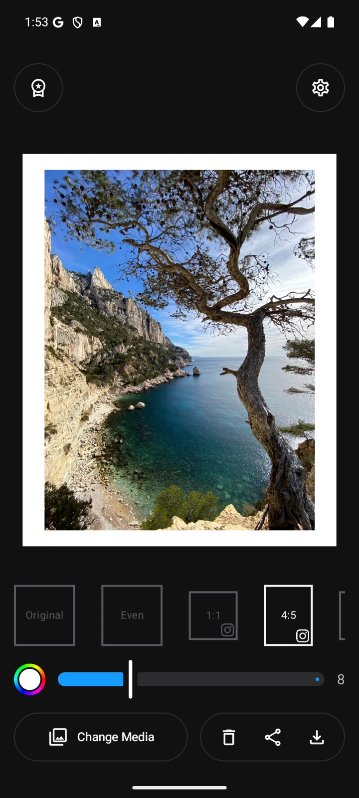
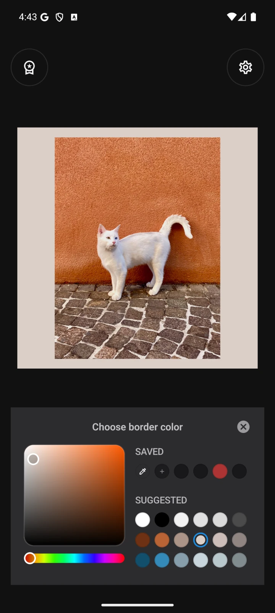

How to add borders to photos on Android
A white frame, a black border, or a color from your photo. Keep the whole composition.
Updated
Open a photo in Simple Border, choose the frame shape, then adjust the border width and color. Tap Save to keep a copy on your Android device or Share to send it to another app. The border adds space around your photo without cropping it.
1. Choose your photo
Install Simple Border from Google Play and open it. Tap Choose Media, then select your photo in the Android system picker.
2. Choose the frame shape
Use the format tiles below the preview. The photo fits inside the new canvas; the extra space becomes the border.
- 1:1 or 4:5
- A square or portrait canvas, respectively. The screenshot shows 4:5.
- Original
- Keep the photo’s aspect ratio as you add the frame.
- Even
- Use the same border thickness on every side. The final aspect ratio can change.
You can scroll the format row to see more choices. Use the preview to check the full composition before moving on.

3. Adjust the border width
Move the slider below the format tiles to make the border narrower or wider. Watch the preview as you adjust it.
A fixed shape such as 1:1 or 4:5 can leave more space on two sides when your photo has a different shape. Choose Even if equal thickness on all four sides matters more than the final ratio.
4. Choose a border color
Tap the round color control beside the slider. Pick white, black, a suggested color, or use the color picker for a custom shade.
Close the panel when you’re happy with the result. For a dark frame or bars, see the black-border guide.

5. Save or share your photo
Tap Save, the downward-arrow icon at the bottom right, and wait for Save Complete. Open the saved file in your gallery and check it before posting.
Use Share, the connected-dots icon beside Save, to send a bordered copy to another app. If you also want a gallery copy, use Save. Find the export folder below.
Keeping the full composition does not mean the file is lossless. Android photo exports are JPEGs; inspect the saved image at full size if fine detail matters.
Finding and keeping your exports
Where are my saved photos and videos on Android?
In Simple Border 2.1.0, new photos and videos are saved together in Pictures/Simple Border on Android 11 and later. On Android 10, look in DCIM/Simple Border. Find the folder in your gallery or file manager. Earlier exports stay in their previous locations.
What is the difference between Save and Share?
Save creates a copy in your device’s media library. Share prepares a temporary bordered copy for another app; opening the sharing menu does not also save a gallery copy. Choose Save if you want to keep the exported file on your device.
Why can’t I see the Save or Share button?
Open Settings using the gear icon and check Show Save Button and Show Share Button. You can hide either action, but at least one stays visible.
Choose a style for your next photo
For a focused dark-frame workflow, read how to add black borders or black bars. To choose a canvas for a post, see the Instagram format guide.